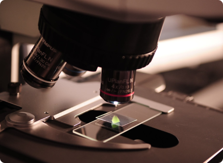

Не бійся дізнатись!
Поспіши діяти!
Про проект
Календар
Пройти тест
Новини
Лола Франк
1
Ovulet
сайт для визначення овуляції
методом Папороті
Пройти тест
Напишіть нам, ми онлайн!

1 Крок
Зразок Слини
Для проведення тесту слід витягти предметне скло і залишити на ній свій зразок слини.
1 Крок
Зразок Слини
Для проведення тесту слід витягти предметне скло і залишити на ній свій зразок слини.
1 Крок
Зразок Слини
Для проведення тесту слід витягти предметне скло і залишити на ній свій зразок слини.
1 Крок
Зразок Слини
Для проведення тесту слід витягти предметне скло і залишити на ній свій зразок слини.